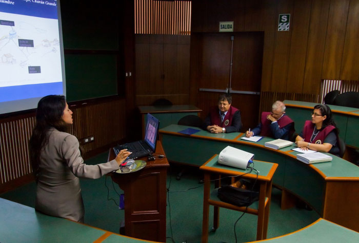

Docente profesional, especialista en Comunicación, Lengua Española y Literatura Universal, con estudios de periodismo escrito. Con dominio de aula, claridad y fluidez en el desarrollo de la sesión de aprendizaje, alta competencia en redacción, con ortografía impecable, capacitado en la corrección de estilo y en la elaboración de proyectos de aprendizaje. Responsable, puntual, cumplidor, escrupuloso en el desarrollo de su plan de clase, con un buen manejo del vocabulario de la lengua española y con amplia cultura en el campo de las letras y las artes.
Capacidades
Mis Capacidades
Tengo una variedad de capacidades como producto de mis estudios y mi larga experiencia, los cuales me habilitan para enseñar a escolares y universitarios, así como para elaborar y asesorar trabajos de investigación, a nivel secundario y superior.
Corrección Ortográfica
De acuerdo a las normas de idioma español en cuanto a tildación, uso de letras, puntuación, concordancia y mayúsculas.
Corrección de estilo
En la redacción de textos, ordenamiento en párrafos por subtemas, con claridad, coherencia y fundamento en el texto y del uso apropiado del léxico.
Conocimiento en Word, Excel y Powerpoint
En la enseñanza, asesoramiento y elaboración de trabajos de investigación a presentarse y exponerse en clase.
Estilo APA
En la revisión de trabajos de investigación, proyectos o tesis, para adecuarlos al estilo académico exigido por las instituciones de educación superior.
Comprensión lectora
En la lectura, análisis y comprensión de textos escritos, identificando el tema, el mensaje, las ideas principales, la intención del autor y expresando comentarios sobre su contenido.
Responsabilidad y Eficiencia
En la enseñanza, aprendizaje, asesoramiento y orientación de sus alumnos, con esmero, dedicación y firme deseo de servir y lograr su objetivo.
Experiencia
¡Más de 30 Años de Experiencia!
Más de 30 años en la enseñanza en instituciones públicas y privadas a nivel secundaria y superior. Más de 10 años de experiencia en clases particulares a estudiantes de nivel secundaria y de preparación preuniversitaria.
I.E. “Ricardo Palma”
Docente
1989 - 2016
Trabajó como docente de 1989 a 2016, habiéndose desempeñado como docente de especialidad en ese periodo, Coordinador de Área durante 6 años y posteriormente como Coordinador Pedagógico de colegio JEC durante los años 2015 y 2016 en el área de Comunicación y Arte.
COLFAP “Manuel Polo Jiménez”
Docente
1994 - 1998
Trabajó como docente de 1994 a 1998 desempeñándose como docente a cargo de la asignatura de Lenguaje y Literatura en el 1er. y 2do. Grados del Nivel Secundaria.
CEPNE “Horacio Patiño Cruzatti”
Docente
1993 - 1993
Trabajó como docente el año 1993 desempeñándose como docente a cargo de las asignaturas de Comunicación y Razonamiento Verbal dirigido a estudiantes del 1er. Y 2do. Grados del Nivel Secundaria.
CEP “Alcides Vigo Hurtado”
Docente
1982 - 1983
Trabajó como docente los años 1982 y 1983 desempeñándose como docente a cargo de la asignatura de Lenguaje y Literatura en el 4to. Y 5to. Grados del Nivel Secundaria.
Instituto Superior Tecnológico “Julio C. Tello”
Docente
1985 - 1987
Trabajó como docente los años 1985, 1986 y 1987 desempeñándose como docente a cargo de las asignaturas de Lengua I y Lengua II dirigida a estudiantes de Informática, como prerrequisito para la carrera de Programador y Analista en Computación.
Escuela Superior de la Guardia Civil
Docente
1982 - 1985
Trabajó como docente los años 1982, 1983, 1984 y 1985 desempeñándose como docente a cargo de la asignatura de Lenguaje y Ortografía dirigida a los cadetes de la Escuela de la Policía Nacional.
Educación
Título: Licenciado en Educación (Universidad Nacional Mayor de San Marcos)
Además de los estudios y títulos profesionales que ostenta y se mencionan a continuación, ha recibido diversas capacitaciones en tecnología educativa, metodología, literatura contemporánea, comprensión de textos y otros.
Universidad Nacional Mayor de San Marcos
Licenciado en Educación
Graduado en 1976
En la especialidad de Lengua y Literatura, graduado con la tesis titulada “El estudio dirigido en la interpretación de textos literarios”.
Universidad Particular César Vallejo
Maestría en Educación
Graduado en 2014
Con mención en Gestión y Docencia Universitaria, graduado con la tesis titulada "Técnicas de lectura en la enseñanza de textos narrativos".
Universidad Nacional Mayor de San Marcos
Periodista Profesional
Graduado en 1984
Con experiencia en la redacción de reportajes en revistas y en la producción y conducción de programas radiales de carácter cultural.
Servicios
Los servicios que se brindan pueden ser personales (clases particulares, asesoramiento en exposiciones orales) o virtuales (revisión de trabajos escritos), según el acuerdo que se tengan con el cliente.
Clases Particulares a Domicilio
Revisión, corrección y mejoramiento de trabajos escritos

Asesoramiento en tareas de exposición oral
Clases Particulares a Domicilio
Enseñanza, reforzamiento o nivelación en Comunicación, Lengua o Literatura, para escolares, estudiantes preuniversitarios, de educación superior o ciudadanos extranjeros que necesiten aprender el idioma español.
Revisión, corrección y presentación de trabajos escritos
Revisión, corrección ortográfica, corrección de estilo, adecuación al estilo APA, fundamentación, parafraseo y uso del léxico apropiado en asignaciones, portafolios, trabajos de investigación, proyectos o tesis.
Asesoramiento en tareas de exposición oral
Preparación de diapositivas, exposiciones individuales, contenido de la exposición, orden y coherencia, pausas, sean para trabajos a nivel secundario, sustentación de tesis o de proyectos a nivel profesional.